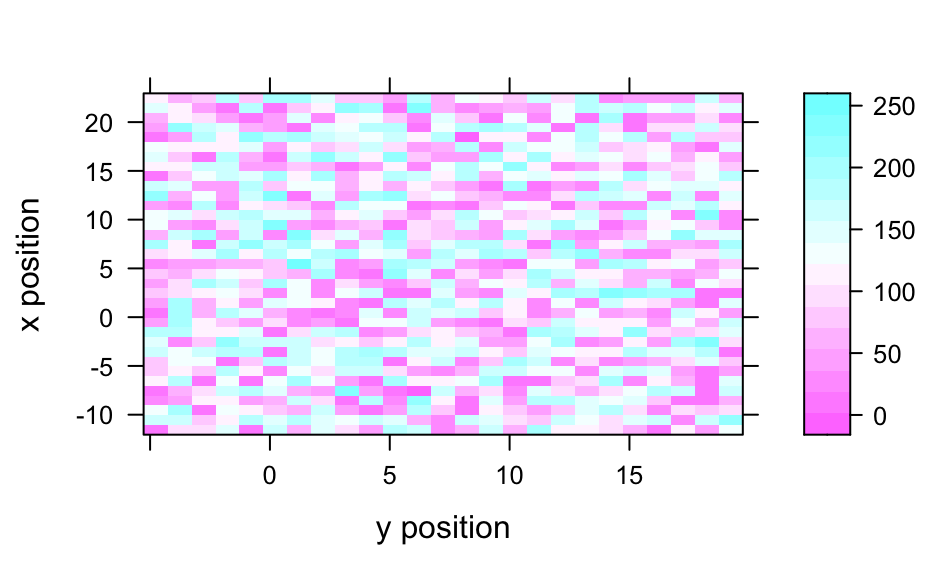
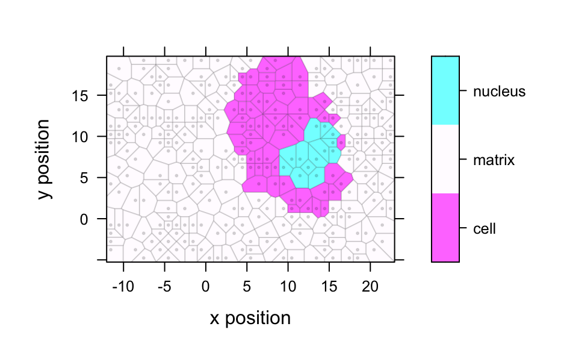

Plot a Map and Identify/Select Spectra in the Map
levelplot functions for hyperSpec objects. An image or map of a summary
value of each spectrum is plotted. Spectra may be identified by mouse click.
Source: R/plotmap.R, R/levelplot.R, R/map.identify.R, and 1 more
levelplot.RdThe model can contain the special column name .wavelength to specify the wavelength
axis.
plotmap(object, model = spc ~ x * y, func = mean, func.args = list(), ...) # S4 method for hyperSpec,missing levelplot(x, data, ...) # S4 method for formula,hyperSpec levelplot( x, data, transform.factor = TRUE, ..., contour = FALSE, useRaster = !contour ) map.identify( object, model = spc ~ x * y, voronoi = FALSE, ..., tol = 0.02, warn = TRUE ) plotvoronoi(object, model = spc ~ x * y, use.tripack = FALSE, mix = FALSE, ...)
Arguments
| object, data | the |
|---|---|
| model, x | formula specifying the columns of object that are to be
displayed by |
| func, func.args | Before plotting, This can be suppressed manually by setting |
| ... | further arguments are passed down the call chain, and finally
to |
| transform.factor | If the color-coded variable is a factor, should
|
| contour, useRaster | see |
| voronoi | Should the plot for identifying spectra by mouse click be
produced by |
| tol | tolerance for |
| warn | should a warning be issued if no point is within the specified tolerance? See also details. |
| use.tripack | Whether package tripack should be used for calculating
the voronoi polygons. If |
| mix | For Voronoi plots using package tripack, I experienced errors if the data was spatially ordered. Randomly rearrangig the rows of the hyperSpec object circumvents this problem. |
Value
map.identify returns a vector of row indices into
object of the clicked points.
The other functions return a lattice object.
Details
plotmap, map.identify, and the levelplot methods internally use the same
gateway function to levelplot. Thus transform.factor can be used
with all of them and the panel function defaults to panel.levelplot.raster
for all three. Two special column names, .rownames and .wavelength may be used.
levelplot plots the spectra matrix.
plotvoronoi calls plotmap with different default settings, namely the panel
function defaults to panel.voronoi.
panel.voronoi depends on either of the packages 'tripack' or 'deldir'
being installed. For further information, please consult the help page of
panel.voronoi. On the chondro data set, plotmap
is roughly 5 times faster than plotvoronoi using tripack, and ca. 15 times faster than
plotvoronoi using deldir. Package tripack, however, is free only for non-commercial
use. Also, it seems that tripack version hang (R running at full CPU power, but not responding
nor finishing the calculation) for certain data sets. In this case, mix = TRUE may help.
map.identify calls plotmap and plotvoronoi, respectively and waits for
(left) mouse clicks on points. Other mouse clicks end the input.
Unlike panel.identify, the indices returned by map.identify are in
the same order as the points were clicked. Also, multiple clicks on the same point are returned
as multiple entries with the same index.
map.identify uses option debuglevel similar to spc.identify:
debuglevel == 1 will plot the tolerance window if no data point was inside (and
additionally labels the point) while debuglevel == 2 will always plot the tolerance
window.
The map.sel.* functions offer further interactive selection, see
map.sel.poly.
See also
vignette (plotting), vignette (hyperspec)
trellis.factor.key for improved color coding of factors
Author
C. Beleites
Examples
if (FALSE) { vignette (plotting) vignette (hyperspec) } levelplot (spc ~ y * x, chondro [,,1003]) # properly rotatedplotmap (chondro [,,1003])# plot spectra matrix levelplot (spc ~ .wavelength * t, laser, contour = TRUE, col = "#00000080")# see also plotmat plotmap (chondro, clusters ~ x * y)#>#>#> #> #> #> #> #> #> #> #> #>#>#>